13 阶段61 自制案例44 本轮新增
每例从具体业务问题、观测量与单位讲起，再通过原理图、数据图和交互计算解释智能方法。紧凑流程图辅助定位步骤；模型、规则基线与指标由浏览器实际计算。
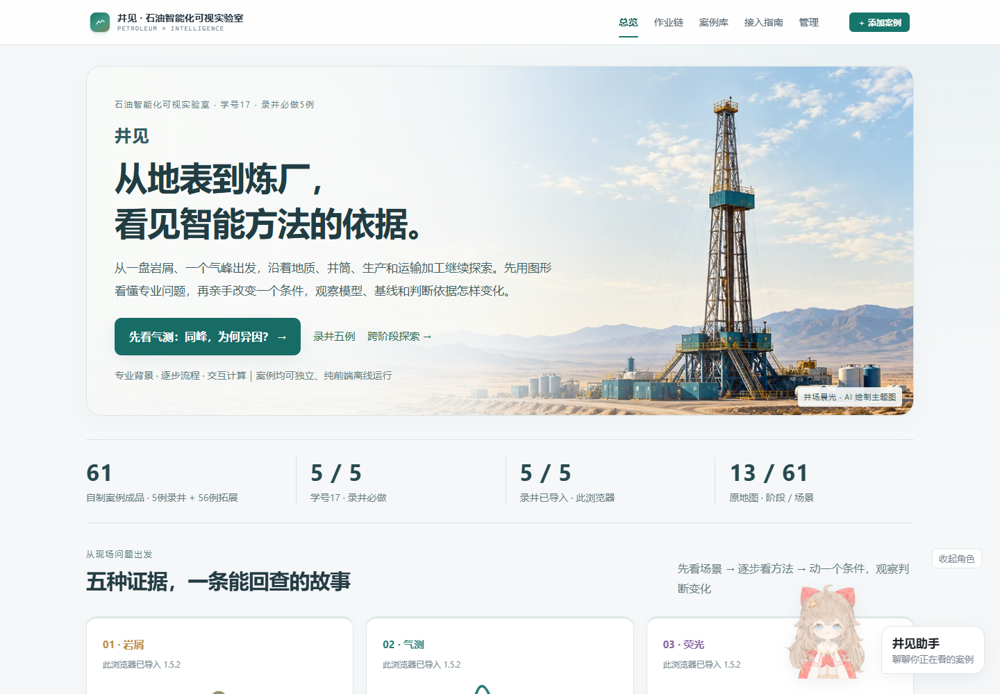
门户1.9.0-preview · 本轮新增44例 · 录井五例1.5.2保持
打开首页 · 实际完成记录 · 逐例覆盖与验证范围 · 独立内容与预测边界审阅
每例从具体业务问题、观测量与单位讲起，再通过原理图、数据图和交互计算解释智能方法。紧凑流程图辅助定位步骤；模型、规则基线与指标由浏览器实际计算。

61例生产包累计保存9,484,451字符，后端为IndexedDB。老师原站只读副本保持原样，原站localStorage同时保存61例不在通过声明中。
704项逐例源码/默认计算审阅与浏览器报告分开。修复了实际浏览器发现的沙箱history API兼容问题；早期错误等待条件、修复前运行记录保留在attempts及相应attempt文件中，不计为当前通过。
未做实体手机、Firefox/WebKit、全部参数组合、新语音或在线模型测试。旧五例的完整记录另见原验收页。专业背景解释GR、Rt、RHOB与缺失区间，演示先封存原值，再比较跨曲线近邻与端点线性插值。下面是实际改变缺口参数后重算的页面。
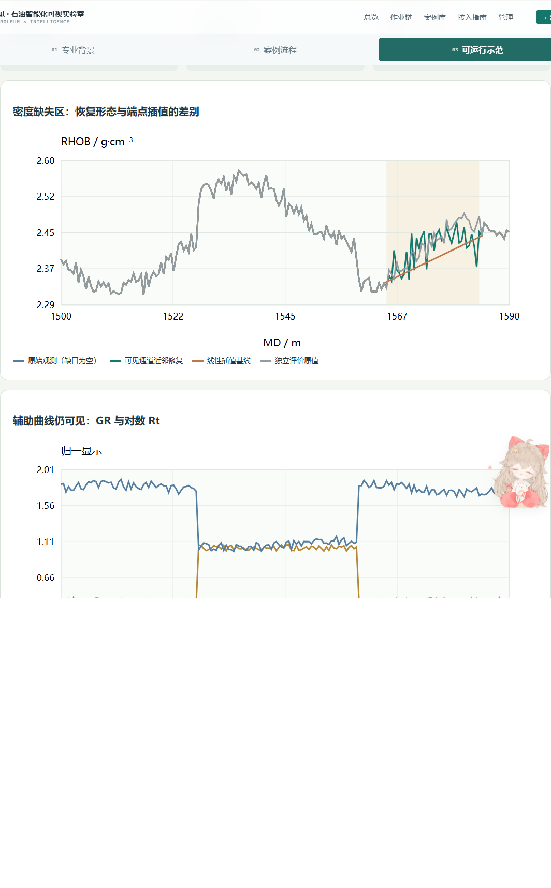
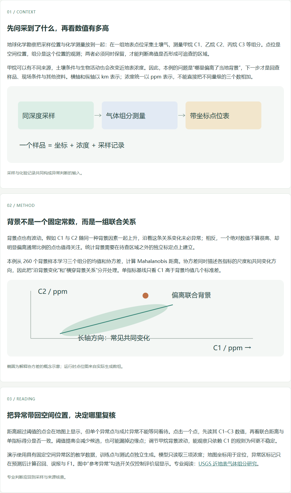
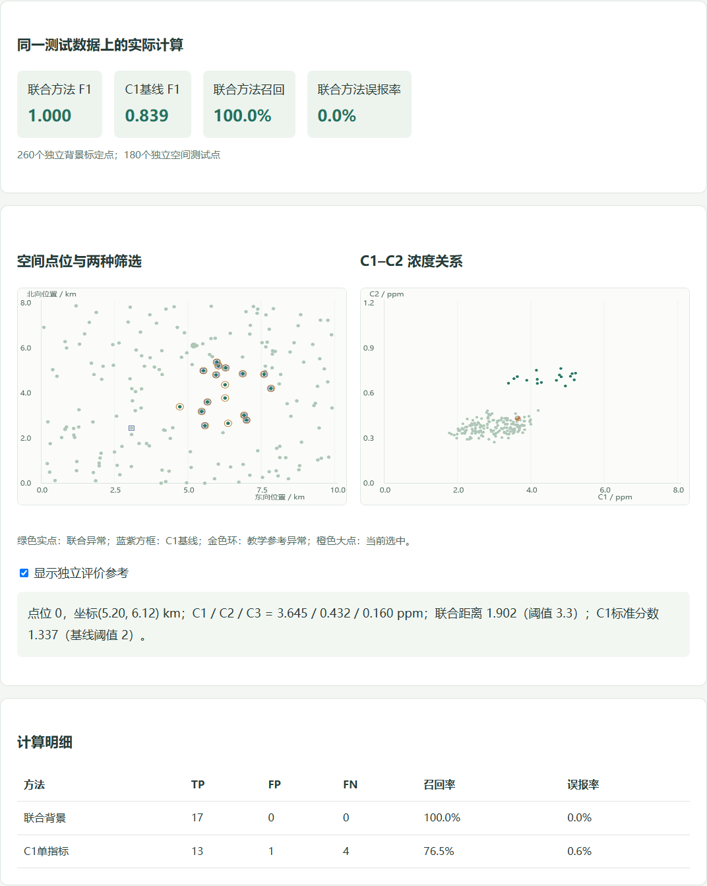
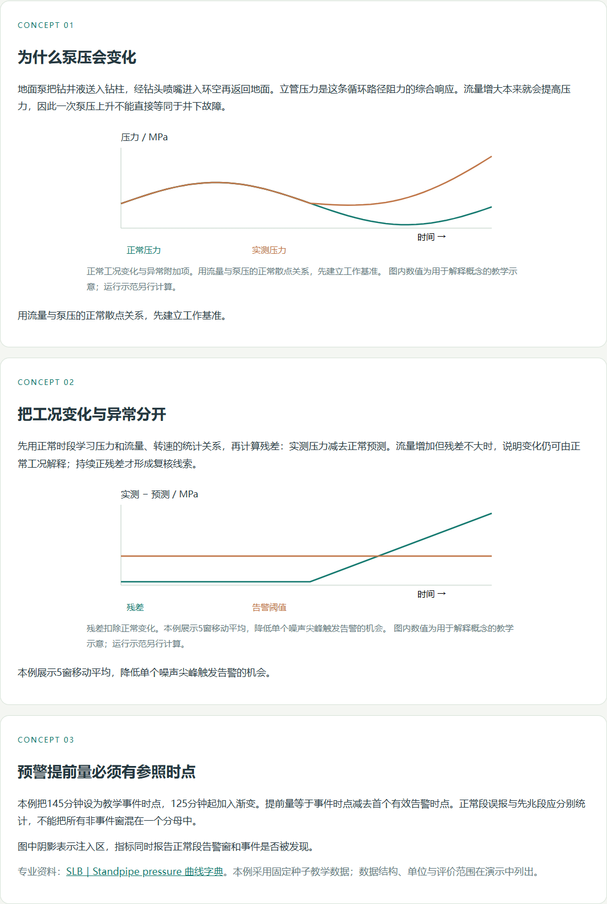
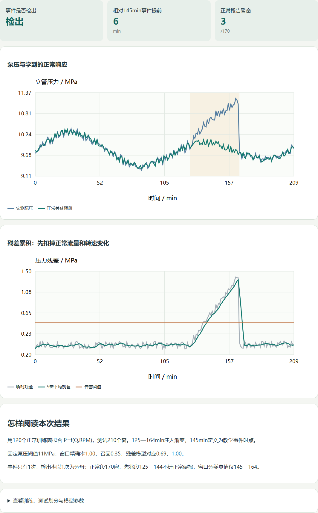
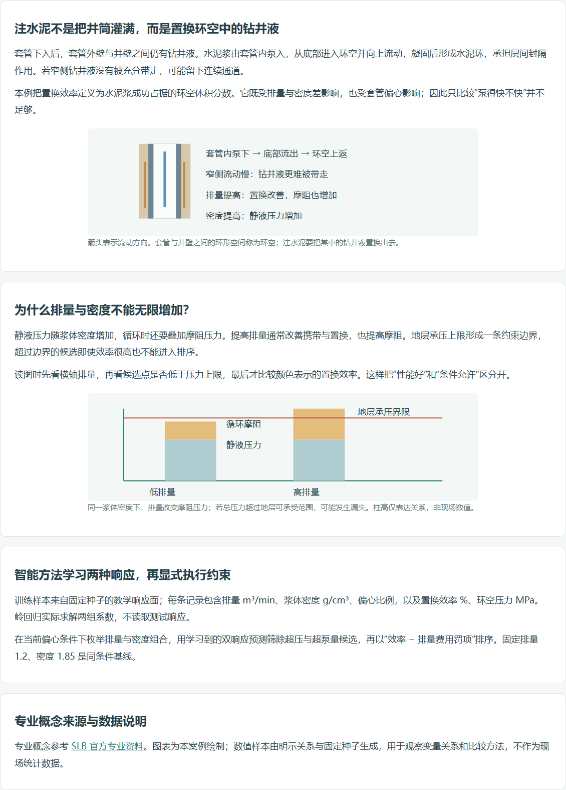
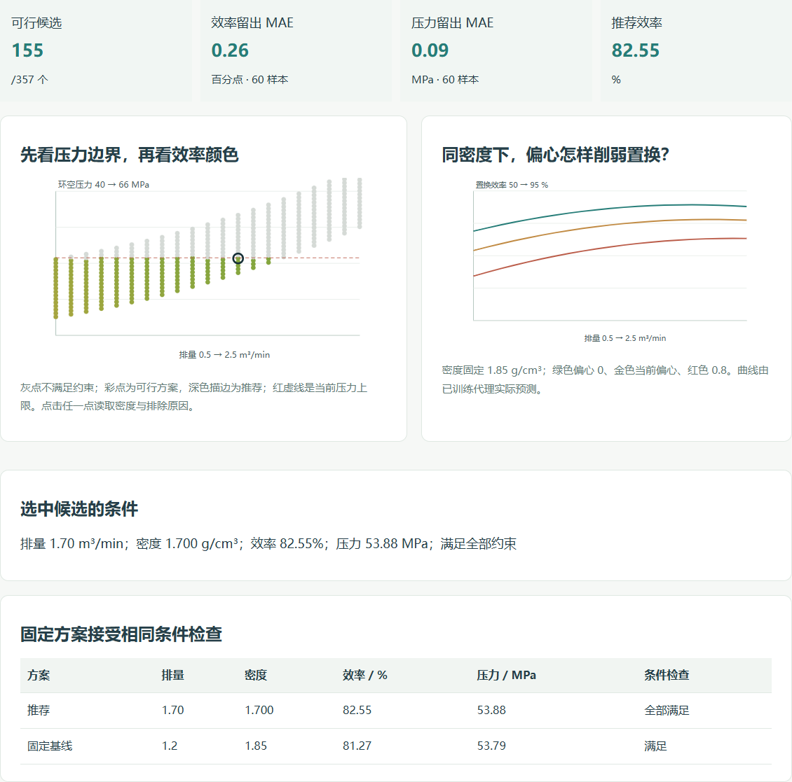
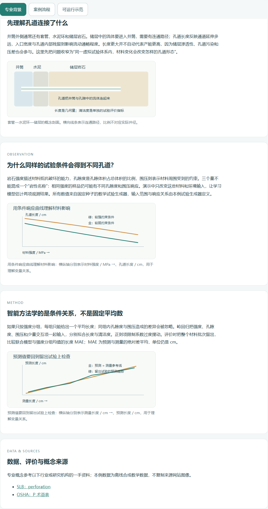
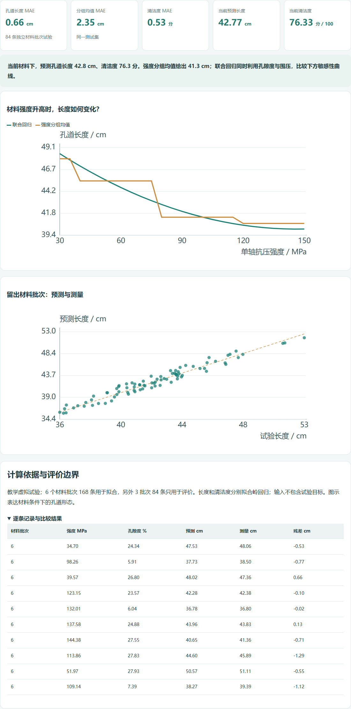
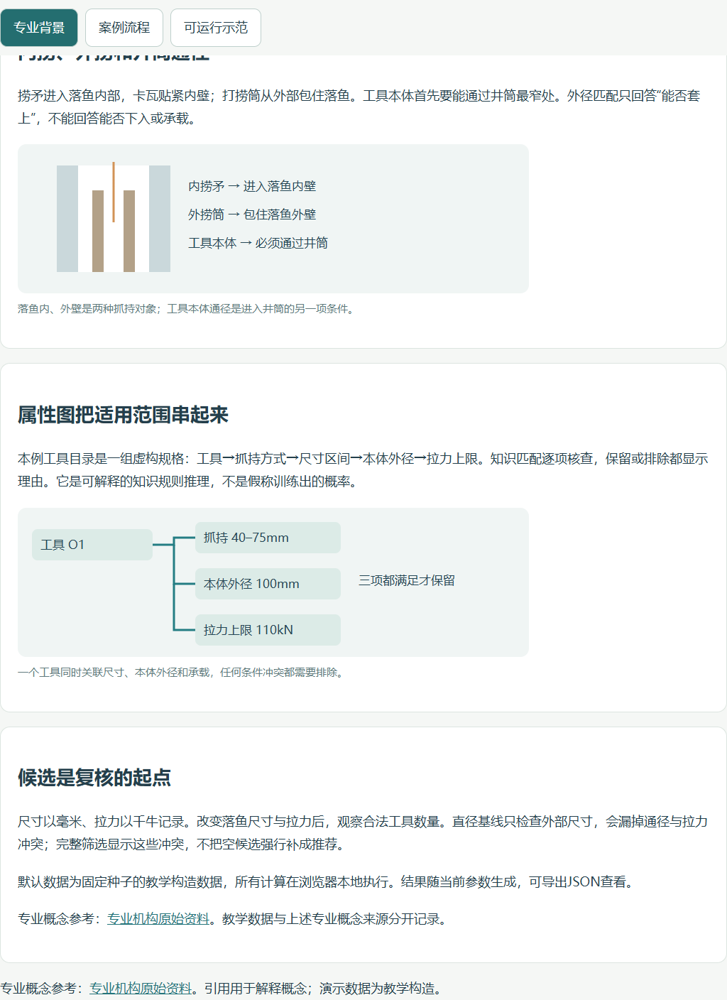
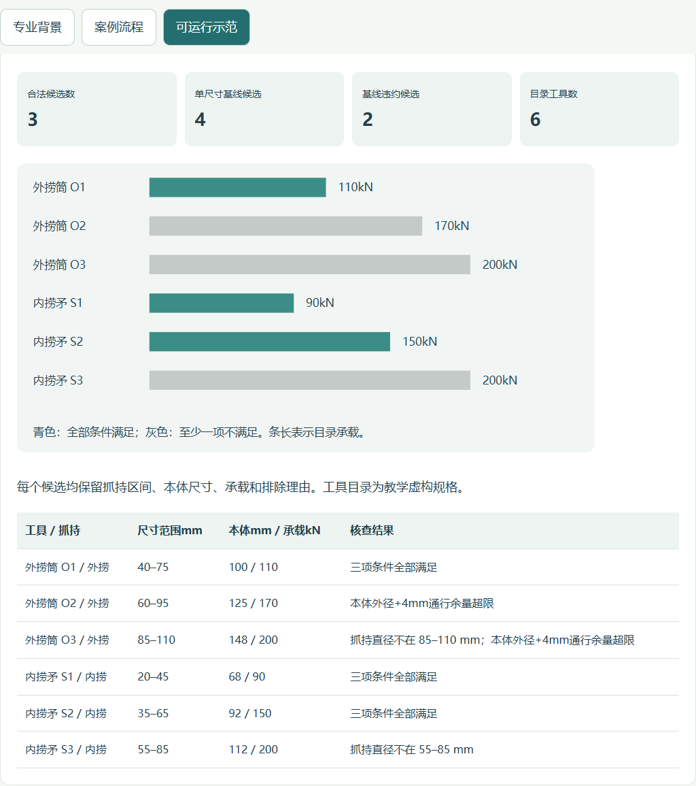
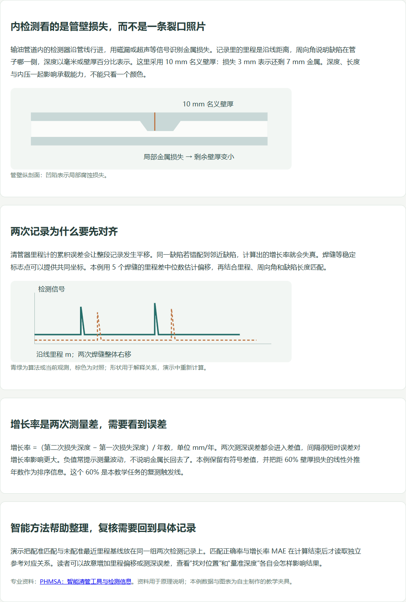
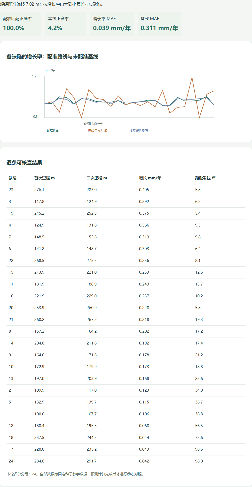
| 阶段 | 全部场景 | 本轮新增 |
|---|---|---|
| 地质勘察 | 4/4 | 3 |
| 物探 | 5/5 | 4 |
| 钻井 | 5/5 | 4 |
| 录井 | 5/5 | 0 |
| 测井 | 5/5 | 4 |
| 固井 | 4/4 | 3 |
| 完井 | 4/4 | 3 |
| 射孔 | 4/4 | 3 |
| 采油 | 5/5 | 4 |
| 修井 | 5/5 | 4 |
| 增采 | 5/5 | 4 |
| 运输 | 5/5 | 4 |
| 加工 | 5/5 | 4 |
| 阶段 | 场景 | 案例 | 本轮范围 |
|---|---|---|---|
| 地质勘察 | G1 | 地质剖面遥感解译 | 既有案例 · 本轮重新导入 |
| 地质勘察 | G2 | 油气地球化学异常识别 | 本轮新增 · 离线及沙箱实跑 |
| 地质勘察 | G3 | 地质图件要素智能提取 | 本轮新增 · 离线及沙箱实跑 |
| 地质勘察 | G4 | 露头裂缝自动统计 | 本轮新增 · 离线及沙箱实跑 |
| 物探 | S1 | 地震断层自动解释 | 既有案例 · 本轮重新导入 |
| 物探 | S2 | 地震相智能分类 | 本轮新增 · 离线及沙箱实跑 |
| 物探 | S3 | 初至波自动拾取 | 本轮新增 · 离线及沙箱实跑 |
| 物探 | S4 | 储层参数反演 | 本轮新增 · 离线及沙箱实跑 |
| 物探 | S5 | 地震资料噪声压制 | 本轮新增 · 离线及沙箱实跑 |
| 钻井 | D1 | 钻速预测与参数优化 | 既有案例 · 本轮重新导入 |
| 钻井 | D2 | 井下复杂事故前兆预警 | 本轮新增 · 离线及沙箱实跑 |
| 钻井 | D3 | 井眼轨迹智能控制 | 本轮新增 · 离线及沙箱实跑 |
| 钻井 | D4 | 钻具失效预测 | 本轮新增 · 离线及沙箱实跑 |
| 钻井 | D5 | 钻井液性能智能调控 | 本轮新增 · 离线及沙箱实跑 |
| 测井 | W1 | 测井曲线智能分层 | 本轮新增 · 离线及沙箱实跑 |
| 测井 | W2 | 储层参数智能解释 | 本轮新增 · 离线及沙箱实跑 |
| 测井 | W3 | 成像测井裂缝识别 | 本轮新增 · 离线及沙箱实跑 |
| 测井 | W4 | 岩性识别 | 既有案例 · 本轮重新导入 |
| 测井 | W5 | 测井数据修复 | 本轮新增 · 离线及沙箱实跑 |
| 固井 | C1 | 固井质量智能评价 | 既有案例 · 本轮重新导入 |
| 固井 | C2 | 注水泥参数优化 | 本轮新增 · 离线及沙箱实跑 |
| 固井 | C3 | 固井漏失风险预测 | 本轮新增 · 离线及沙箱实跑 |
| 固井 | C4 | 套管居中度智能评估 | 本轮新增 · 离线及沙箱实跑 |
| 完井 | CO1 | 完井方式智能优选 | 既有案例 · 本轮重新导入 |
| 完井 | CO2 | 射孔参数智能设计 | 本轮新增 · 离线及沙箱实跑 |
| 完井 | CO3 | 完井管柱受力智能分析 | 本轮新增 · 离线及沙箱实跑 |
| 完井 | CO4 | 智能完井滑套控制策略 | 本轮新增 · 离线及沙箱实跑 |
| 射孔 | P1 | 射孔参数优化 | 既有案例 · 本轮重新导入 |
| 射孔 | P2 | 射孔孔道形态预测 | 本轮新增 · 离线及沙箱实跑 |
| 射孔 | P3 | 射孔弹型智能选型 | 本轮新增 · 离线及沙箱实跑 |
| 射孔 | P4 | 射孔效果智能评估 | 本轮新增 · 离线及沙箱实跑 |
| 采油 | PR1 | 抽油机井工况诊断 | 既有案例 · 本轮重新导入 |
| 采油 | PR2 | 产量智能预测 | 本轮新增 · 离线及沙箱实跑 |
| 采油 | PR3 | 智能注水调配 | 本轮新增 · 离线及沙箱实跑 |
| 采油 | PR4 | 电潜泵故障预警 | 本轮新增 · 离线及沙箱实跑 |
| 采油 | PR5 | 结蜡 / 结垢预测 | 本轮新增 · 离线及沙箱实跑 |
| 修井 | WO1 | 修井作业方案智能推荐 | 既有案例 · 本轮重新导入 |
| 修井 | WO2 | 落物打捞工具智能选型 | 本轮新增 · 离线及沙箱实跑 |
| 修井 | WO3 | 套管损伤智能识别 | 本轮新增 · 离线及沙箱实跑 |
| 修井 | WO4 | 修井作业风险预警 | 本轮新增 · 离线及沙箱实跑 |
| 修井 | WO5 | 修井周期预测 | 本轮新增 · 离线及沙箱实跑 |
| 增采 | E1 | 压裂参数智能优化 | 既有案例 · 本轮重新导入 |
| 增采 | E2 | 压裂裂缝形态预测 | 本轮新增 · 离线及沙箱实跑 |
| 增采 | E3 | 化学驱配方智能筛选 | 本轮新增 · 离线及沙箱实跑 |
| 增采 | E4 | 蒸汽吞吐注采参数优化 | 本轮新增 · 离线及沙箱实跑 |
| 增采 | E5 | 微生物采油菌群活性预测 | 本轮新增 · 离线及沙箱实跑 |
| 运输 | T1 | 管道泄漏智能检测 | 既有案例 · 本轮重新导入 |
| 运输 | T2 | 管道腐蚀智能评估 | 本轮新增 · 离线及沙箱实跑 |
| 运输 | T3 | 集输系统工况优化 | 本轮新增 · 离线及沙箱实跑 |
| 运输 | T4 | 油气计量智能校正 | 本轮新增 · 离线及沙箱实跑 |
| 运输 | T5 | 储罐液位与泄漏智能监控 | 本轮新增 · 离线及沙箱实跑 |
| 加工 | R1 | 常减压装置操作优化 | 本轮新增 · 离线及沙箱实跑 |
| 加工 | R2 | 催化裂化产物预测 | 本轮新增 · 离线及沙箱实跑 |
| 加工 | R3 | 炼化设备预测性维护 | 本轮新增 · 离线及沙箱实跑 |
| 加工 | R4 | 化验数据智能审核 | 本轮新增 · 离线及沙箱实跑 |
| 加工 | R5 | 产品质量在线软测量 | 既有案例 · 本轮重新导入 |
运行结果如实呈现。部分方法与简单基线持平或落后，优化也可能恰好选中固定方案；这些比较是学习内容的一部分。